Do You Know Your Institute? · Team CakedUp · 14 Nov 2026
Board sheets: what to print
Print every page at 100% / "Actual size" on the paper shown. The board sheets are one size up for the two softboards: 4 on A2, 10 on A3. The short points on each sheet are what you explain. Where = which softboard (page 2 shows the spot). The grey code in the top right corner of each sheet says the same.
Page
Size
Where
Sheet: the point to explain
2
A4 L
for you
How the two softboards are laid out. To scale, with where each sheet goes in cm.
Board 1 · Setting the scene (1998-2002) · monitor: old photo slideshow
3
A2
Left
Gachibowli in 1998. A village with one road in. 6 companies at Cyber Towers, about 1,000 by 2007-08.
4
A3
Left
Borrowed buildings. IIIT started in two government buildings it was lent. Only two floors of Nilgiri were in use.
5
A3
Left
A diploma on trust. 49 of 50 joined for a diploma, trusting IIIT to become a university. It did in 2001.
6
A2
Left
Where students lived. A bungalow, then bunks in Vindhya, then hostels. Single rooms then, triple sharing now.
Board 2 · The IIIT Way · monitor: building-change slideshow
7
A3
Left
Himalaya and its four blocks. A 22 crore loan, paid off in 6 of 10 years. Who paid for each block.
8
A2
Left
The IIIT Way. The board's argument: borrow, share, take back, build your own. IIIT was a landlord too.
9
A3
Right
Civil 1 (dark). Padlocked civil labs, a concrete mixer, and what we know about the department.
10
A3
Right
Civil 2 (dark). The paper trail: the prospectus and a Vindhya floor plan.
11
A3
Right
Fun facts. Motorola's granite floor in CSTAR. First in Hyderabad to go fully online, says Sridhar. Now on Board 3, under Moving rooms.
Attendance, then and now. Then: everyone had a fixed seat, and a filled seat meant present. Now: biometric.
13
A3
Right
IMS. Paper files to IMS (2017), one process at a time. Some records stay on paper. Don't call IMS "the first fully digital college".
14
A2
Right
Moving rooms. Six rooms that moved: library, mess, lecture hall, Block D, server room, cricket ground.
15
A3
Right
Trees 1. Four banyans saved from road widening. Navjeevan's three stops.
16
A3
Right
Trees 2 (optional). IIIT's mascot Jagruti is named after the banyan Jagruthi. The PGDIT-2002 neem.
Entry table
17-20
A4
Entry
Quiz flashcards, Q1 to Q8. Two per page: cut each page in half to get A5 cards. The answer is upside down for the host. The quiz QR is on the QR card.
21
A4
Entry
QR card. Big QR to the full quiz, small QR to the whole website. Put it on the entry table.
Not used: no room left on the softboards
22-24
A4 L
Don't print
Board headers. Made for the old cardboard boards. Once every sheet is one size up, the two softboards are full.
Add before printing
Photos: save in boards/img/add/ as navjeevan, jagruthi, granite (and biometric, file-folder, ims) .jpg, then bash boards/build.sh. Each fills its red box.
QR codes are live: they open saha264.github.io/iiith-popup-museum (checked on a phone-size screen). Scan one test print before printing all.
Good to know
Dropped as the team decided: the comic, "borrowed teachers", the printed Board 4 cards.
This is the colour version: every board sheet has a background that suits its story. Print it at a print shop. A home printer leaves a thin white edge and uses a lot of ink.
Pages 9 and 10 are dark on purpose (spooky).
PAGE 2 · A4 LANDSCAPE · FOR THE TEAM, NOT THE BOARD
How the two softboards are laid out
Two softboards, to scale
Each softboard is 152.4 cm wide and 121.9 cm tall (5 x 4 ft, long side horizontal). A2 = 42 x 59.4 cm, A3 = 29.7 x 42 cm. Sheets sit 2.5 cm apart, and 6 cm apart where one board's story ends and the next begins. Every top row starts 9 cm below the top edge, and each A3 is centred under the A2 above it. Dashed = optional.
Left softboard Board 1 + start of Board 2
Board 1 · Setting the scene
Board 2 · The IIIT Way
p.3 A2Gachibowli in 1998
p.4 A3Borrowed buildings
p.5 A3Diploma on trust
p.6 A2Where students lived
p.8 A2The IIIT Way
p.7 A3Himalaya
Sheets take up 134.5 x 103.9 cm, so there's 9 cm clear on every side. The three columns start 9, 53.5 and 101.5 cm from the left edge.
Right softboard rest of Board 2 + Board 3
Board 2, cont.
Board 3 · Institutional changes
p.9 A3Civil 1
p.10 A3Civil 2
p.12 A3Attendance
p.13 A3IMS
p.14 A2Moving rooms
p.11 A3Fun facts
p.15 A3Trees 1
p.16 A3Trees 2 (optional)
Sheets take up 142.1 x 103.9 cm, so there's 5 cm clear left and right. The four columns start 5, 41, 73 and 117.5 cm from the left edge.
Fun facts (p.11) moved to Board 3 so that each board keeps its own columns: at these sizes the two softboards are full. The header strips (p.22 to 24) don't fit, so don't print them. Board 4 has no printed sheets: it's the website tour on the vertical screen.
The road to OBH in the early years. Look how empty the land is.
The early main gate. The sign says "Indian Institute of Information Technology". Today the I stands for International.
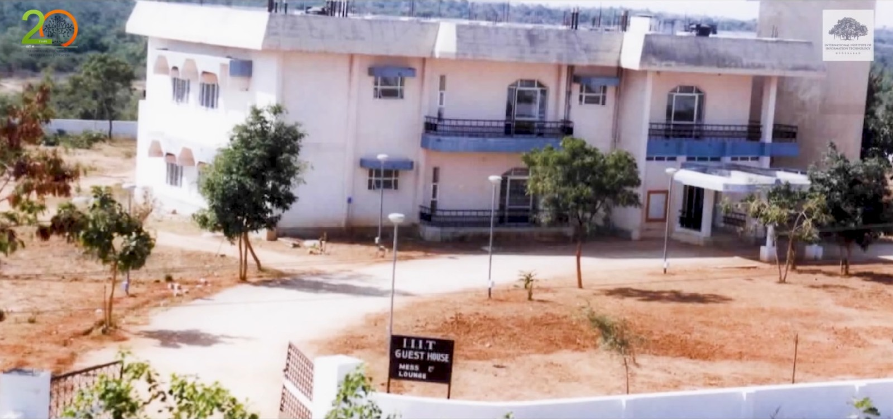
The guest house on bare red soil, with newly planted trees.
A village with forest-like land. Bullock carts on the path. Bears, pigs and monkeys strayed in. Mr. Gopi
One district road from Mehdipatnam was the only way in. Prof. K. S. Rajan
6
companies at Cyber Towers in 1998.
~1,000
in the IT corridor by 2007-08.Rajan
On the screenMore old photos of the campus.
Sources: interviews with Mr. Gopi and Prof. K. S. Rajan (2026); stills from IIIT's 20-year video (photos 01, 02, 04).
B1 · LEFT BOARD · A3 · PAGE 4
Board 1 · Setting the scene
A college in borrowed buildings
IIIT didn't build its first buildings. It was handed them.
An early classroom.
1997-98 The state gave IIIT land and two government buildings it already had.
Vindhya was the old district collectorate. Nilgiri was the old district court. Gopi
In 1998 only Nilgiri's first two floors were in use: classrooms, labs, offices and exam halls. Prof. P. J. Narayanan
The one big lecture hall was SH-1 in Vindhya. PJN
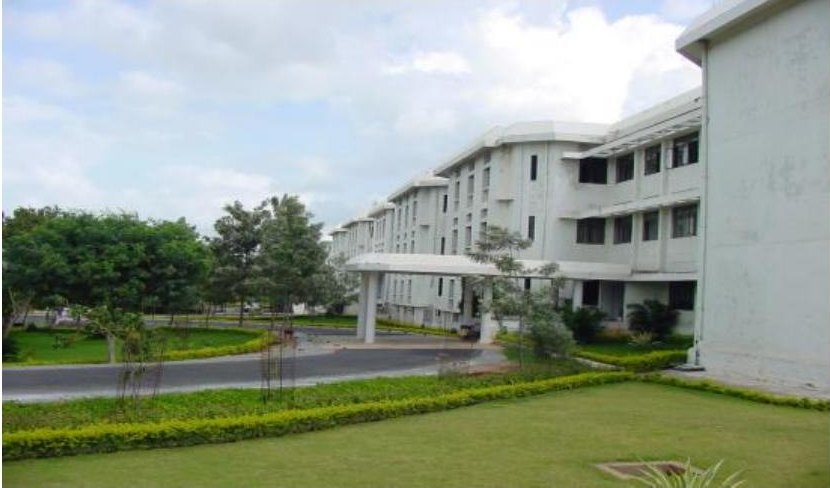
A campus building in the prospectus, around 2001.
Memories differ: SLN Shastry remembers Nilgiri as an unfinished government building that was lent for classrooms and labs.
Sources: interviews with Mr. Gopi, Prof. P. J. Narayanan and SLN Shastry (2026); IIIT prospectus (c.2001); still from IIIT's 20-year video (photo 03).
B1 · LEFT BOARD · A3 · PAGE 5
Board 1 · Setting the scene
A diploma on trust
Would you join a college that couldn't promise you a degree?
Inauguration of the first batch of GDIT students.
49
of 50 seats filled in the first batch, 2 Sep 1998. Gopi
IIIT wasn't a university yet, so it couldn't promise a degree. They signed up for a Graduate Diploma in IT (GDIT). PJN
Student emails ended in @gdit.iiit.net. Faculty had @iiit.net. PJN
2001 IIIT became a deemed university. Degrees at last.
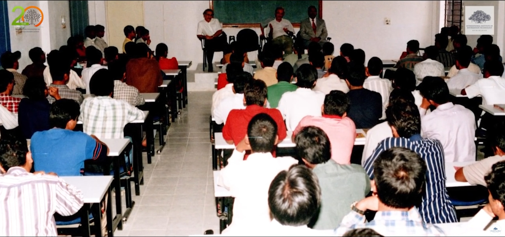
The first batch of students listening to a class.
Sources: interviews with Mr. Gopi and Prof. P. J. Narayanan (2026); IIIT prospectus (c.2001); stills from IIIT's 20-year video (photos 07, 08).
B1 · LEFT BOARD · A2 · PAGE 6
Board 1 · Setting the scene
Where did the first students sleep?
1998The District Collector's bungalow and three flats. PJN
1999A whole batch on two-tier bunk beds inside Vindhya, army style. PJN
2000Palash, Parijat, then Kadamb open. The bunks come down. PJN
c.2001Every student gets a single room. prospectus
NowTriple sharing. Visiting interns six to a room in the holidays. Sridhar Kora
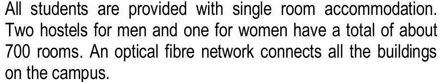
The prospectus, around 2001: "All students are provided with single room accommodation."
The bungalow stood where the New Academic Block is going up now. PJN
Before: the NAB site before building work, from above.
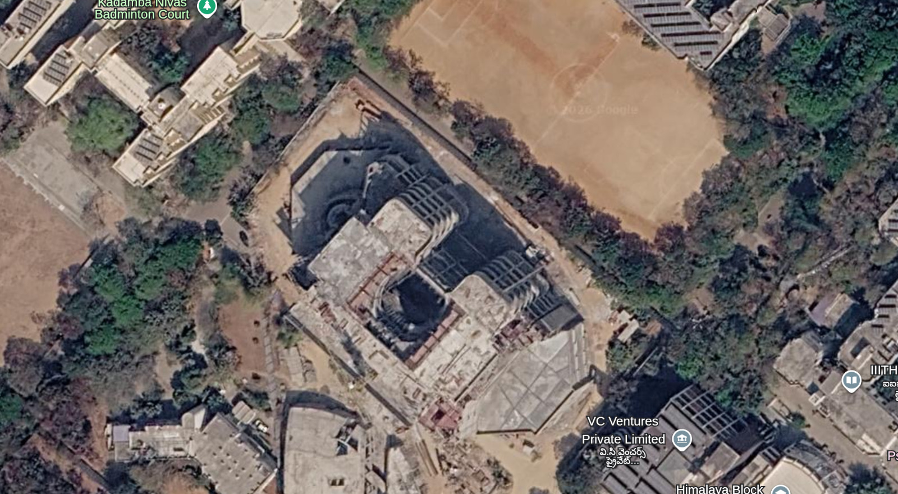
Later: the same spot in the latest satellite image we have. Imagery: Google Earth.
Memories differ: SLN Shastry says boys stayed in Vindhya and girls in the Judge's Quarters at first.
Sources: interviews with Prof. P. J. Narayanan, SLN Shastry and Sridhar Kora (2026); IIIT prospectus (c.2001); satellite images (photos 09, 14).
B2 · LEFT BOARD · A3 · PAGE 7
Board 2 · The IIIT Way
Himalaya: one loan, four blocks
22 cr
loan to build it. 10 years to pay back. Paid off in 6.PJN
The blocks arrived as bare shells. Each one was fitted out differently:
Block CIIIT's own moneyLecture halls and the exam centre.
Block ATalentSprintFitted out with TalentSprint. IIIT bought it out in 2018. Admin today.
Kohli Research BlockTCSBuilt with TCS. Research.
Block DT-Hub, 2015-2022The state's startup incubator. Back to IIIT in 2022: research labs now.
Only Block C was fitted out with IIIT's own money.
Himalaya stands on the old cricket ground, where faculty and students played together. Prabhakar M
The boxes show who paid, not where each block stands.
Sources: interviews with Prof. P. J. Narayanan and Prabhakar M (2026); Telangana Today (2022) and Wikipedia: T-Hub.
B2 · LEFT BOARD · A2 · PAGE 8
Board 2 · The IIIT Way
Borrow, share, take back, build your own
On the screenWatch the buildings grow, seen from above.
Borrow1998
IIIT started in government buildings lent by the state: Vindhya and Nilgiri.
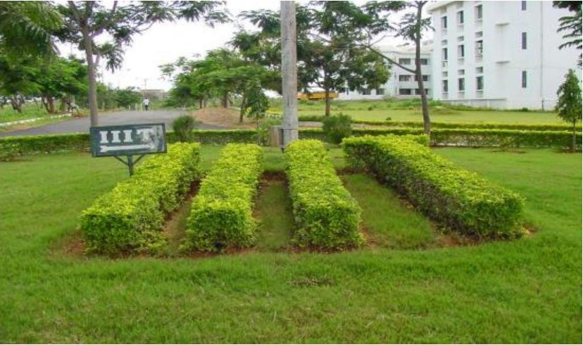
The campus in the prospectus, around 2001.
Share1998-2007
Six company schools ran inside Vindhya. The 2002 campus plan calls it the "Corporate Schools" building.
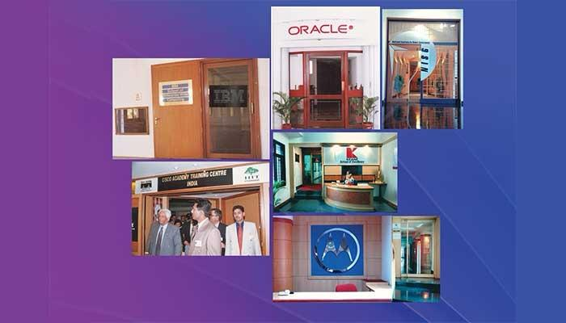
IBM, Oracle, Motorola and Cisco labs.The list in the prospectus.
Take back
Then IIIT took its space back, one building at a time.
2007Vindhya, from the company schools
2018Himalaya Block A, from TalentSprint
2022Himalaya Block D, from T-Hub
Build your own
Himalaya, on its own loan. Its own servers in Nilgiri, still running. Its own office system, IMS (2017).
22 croreHimalaya loan, paid off in 6 years
1998first server room, Nilgiri
2017IMS
Landlord too
IIIT leased out space in its own buildings: an old table lists 67,118 sq ft of leased space, to RGUKT, TalentSprint, SBH and others (some of it vacant).
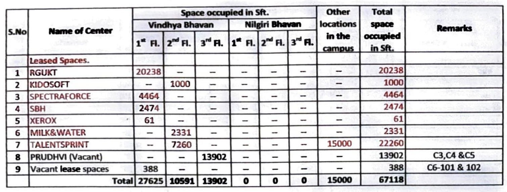
"Leased Spaces", from an undated floor-space table.
Sources: interviews with Prof. P. J. Narayanan, Prabhakar M and Prof. K. S. Rajan (2026); IIIT prospectus (c.2001); campus layout plan (2002); lab floor plans and floor-space tables (undated); Telangana Today (2022); team photos (19).
B2 · RIGHT BOARD · A3 · PAGE 9
Board 2 · A branch that was cut
A civil department on a computer campus
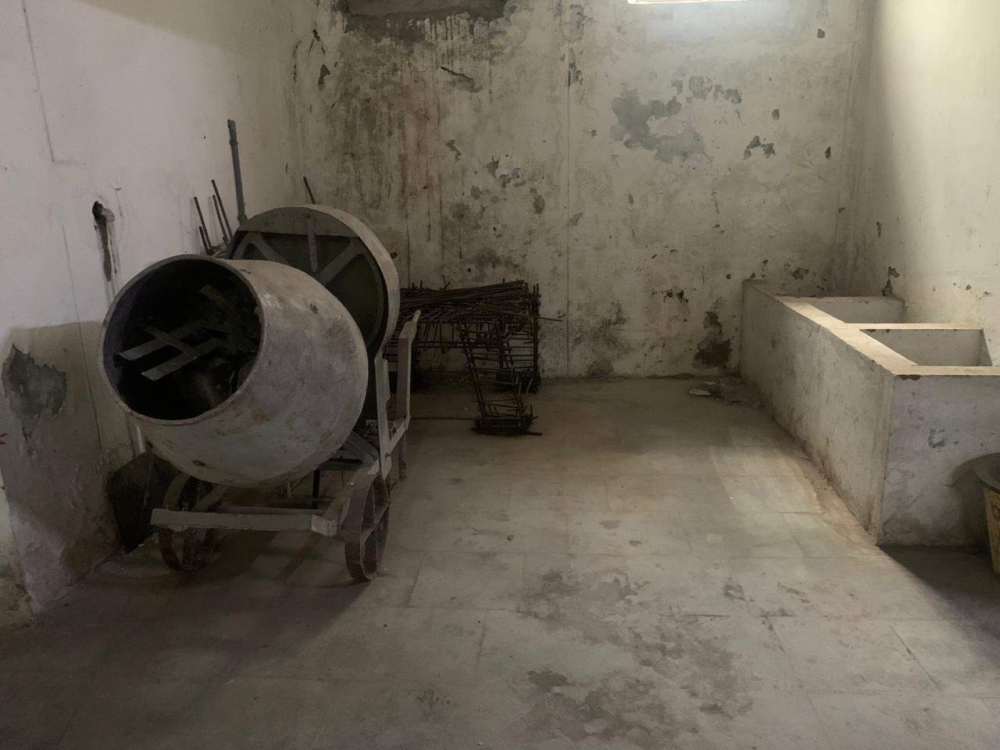
An old concrete mixer in the abandoned civil engineering department, on our campus.
Hydraulics Lab
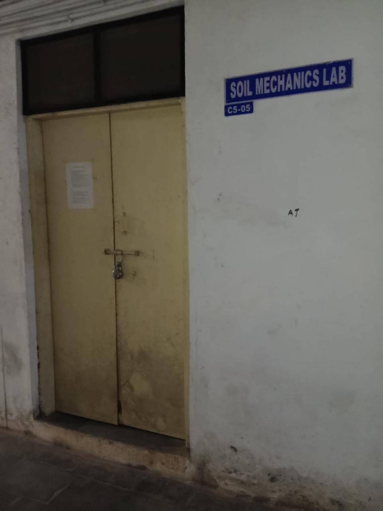
Soil Mechanics Lab
Building Materials Lab
Engineering Workshop
What we know
c.2001 The prospectus offers an M.Tech in IT for Building Sciences, "for architects and civil engineers", and lists a research centre for Intelligent Buildings.
c.2001 Its faculty include Vishal Garg, a civil engineer working on intelligent buildings, and Venkateswarlu Mandadi, who works on structural dynamics.
Later A floor-space table lists EERC, with a CASE Lab, and a Building Science Lab, both in Vindhya.
Today Four labs, every door padlocked. IIIT teaches CS and ECE, and does research.
Sources: IIIT prospectus (c.2001); lab floor plans and floor-space tables (undated); team photos from the abandoned civil engineering department (photos 39, 41, 42, 43, 46).
B2 · RIGHT BOARD · A3 · PAGE 10
Board 2 · A branch that was cut
The paper trail
The old papers say this branch was real.
Prospectus, around 2001: an M.Tech in IT for Building Sciences, "for architects and civil engineers".
Same prospectus: a research centre for Intelligent Buildings.
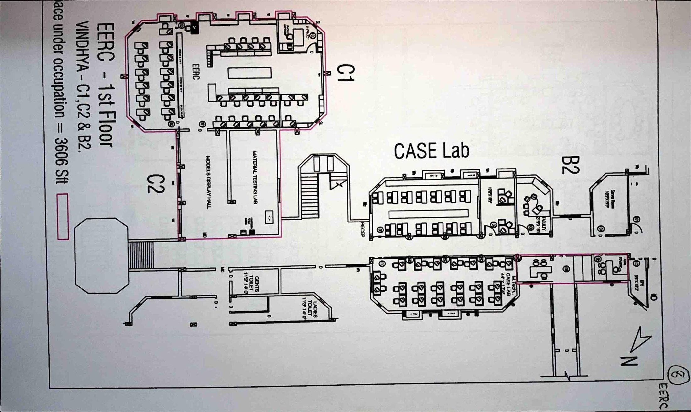
A floor plan of Vindhya (undated): EERC, with a CASE Lab.
The papers show it from about 2001. Today the labs are locked, and IIIT teaches CS and ECE, and does research.
Sources: IIIT prospectus (c.2001); lab floor plans and floor-space tables (undated); team photos.
B3 · RIGHT BOARD · A3 · PAGE 11
Board 3 · Fun facts
Did you know?
Look down
Next time you're in CSTAR, look at the floor. The black granite was put in by Motorola's company school, and it's still there. PJN
Add this morning's granite photoSave it as boards/img/add/granite.jpg.
First online
When COVID shut the campus, classes and exams moved to CodeTantra. Sridhar Kora says IIIT was the first institution in Hyderabad to go fully online.
One person told us this. If you know otherwise, tell us.
Sources: interviews with Prof. P. J. Narayanan and Sridhar Kora (2026); the team's own check of the granite floor (Nov 2026).
B3 · RIGHT BOARD · A3 · PAGE 12
Board 3 · Institutional changes
How did attendance work?
Then: everyone had their own seat
Every student had a seat of their own in class. To take attendance, someone just checked whether each seat was filled. If your seat was filled, you got attendance for that class. an IIIT alum
Now
Biometric
Today, attendance in class is taken with a biometric system. Your seat doesn't matter any more.
Optional: a photo of the biometric machineboards/img/add/biometric.jpg
Can you imagine how easy it would have been to Proxy!!!
Sources: an IIIT alum, talking to the team (Nov 2026); the team's own experience of biometric attendance today.
B3 · RIGHT BOARD · A3 · PAGE 13
Board 3 · Institutional changes
From paper files to one system
Until about 2017, IIIT's office ran on paper.
BeforeAll office work on paper, in government-style cloth and card file folders. Rajan
2016Prabhakar starts digitising hostel registers, reports, and electricity and water bills. Prabhakar M
2017IMS, the institute management system. Hostel room allocation and room shifting go first. Prabhakar M
ThenOffice work moves over one process at a time. Rajan
TodayOffice work keeps moving into IMS. Some records stay on paper, because audit rules need hard copies. Rajan
Optional: photo of an old file folderRajan showed us these folders. boards/img/add/file-folder.jpg
Optional: an IMS screenshotHide names and roll numbers. boards/img/add/ims.jpg
Sources: interviews with Prof. K. S. Rajan and Prabhakar M (2026).
B3 · RIGHT BOARD · A2 · PAGE 14
Board 3 · Institutional changes
Rooms that moved
The library has had two homes, and a third is coming. Follow these rooms on the map on the screen.
Saranga Hall, the first library.The guest house: its old sign says "Mess & Lounge".
The lobby today is where the mess was.
The library
Nilgiri 119, now Saranga Hall1998→Vindhya A62001→plus the upper floor2016→New Academic Blocknext
Where you eat
the guest house1998→hostel messes1999-2001→four messes2005
Nilgiri1998, still running→Vindhya IT wingmoving now
The cricket ground
faculty and students played cricket→the Himalaya complex
Next, the New Academic Block takes the library and the big lecture hall.
Sources: interviews with G. Muralidhar, Mr. Gopi, Prof. P. J. Narayanan and Prabhakar M (2026); Ping! magazine, "Echoes: The Library" (c.2016); Telangana Today (2022); team photos (04, 30, 37).
B3 · RIGHT BOARD · A3 · PAGE 15
Board 3 · HISTREE
Even the trees were moved here
Road widening in front of the campus threatened four banyans. SLN Shastry got them moved instead of cut down. SLN Shastry
Navjeevan, moved three times
Jagruthi
one in the Judge's Quarters area, near Devid's
one near the main gate
Navjeevan's three stops
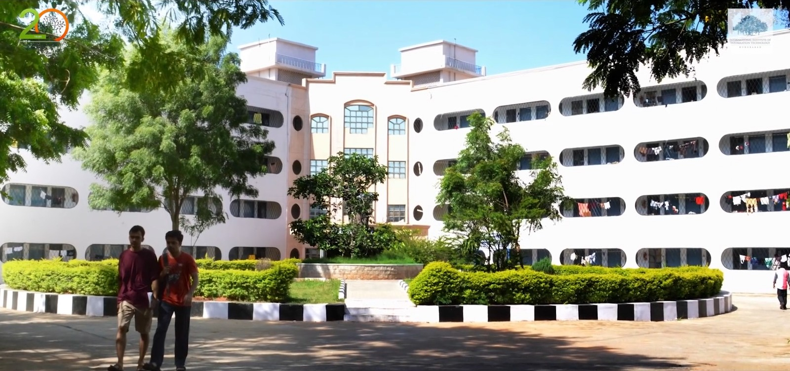
OBH in the early years, with a young banyan.
Add: Navjeevan at OBH todayThis morning's photo: boards/img/add/navjeevan.jpg
Sources: interview with SLN Shastry (2026); the team, on where the trees stand today (Nov 2026); still from IIIT's 20-year video (photo 05). We don't know the year of the road widening yet.
B3 · RIGHT BOARD · A3 (OPTIONAL) · PAGE 16
Board 3 · HISTREE
A mascot named after a tree
The tree
Jagruthi
One of the four banyans SLN Shastry saved.
→
The mascot
Jagruti
IIIT's mascot, "the banyan tree".
IIIT's mascot, Jagruti, is named after this tree. The two names are spelled one letter apart.
Add: Jagruthi todayboards/img/add/jagruthi.jpg
A girl meditating under the banyan near where Devid's is today.
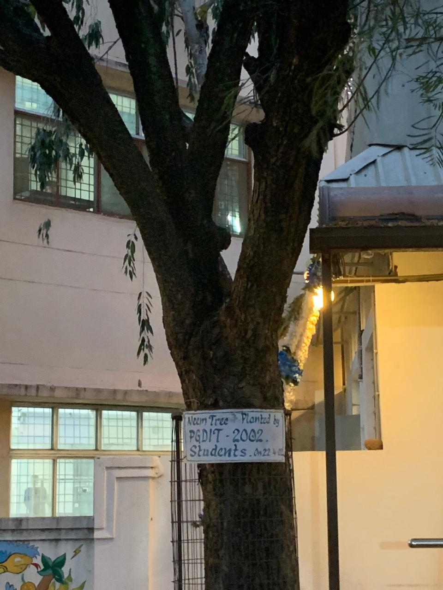
A neem planted by the PGDIT-2002 students.
IIIT's logo is a banyan. It put down its own roots, and so did its trees.
Sources: interview with SLN Shastry (2026); Wikipedia: IIIT Hyderabad (infobox: "Mascot: Jagruti - The Banyan Tree"); the team, on how the mascot got its name (Nov 2026); team photos (26, 49).
ENTRY · A4 · PAGE 21
Entry · Do you know your institute?
Take the full quiz on your phone
8 questions. Try it now, and again after the exhibit.
saha264.github.io/iiith-popup-museum/#/quiz
The whole exhibit, on your phone
The map, the timeline, all seven interviews and the archive of old documents.
saha264.github.io/iiith-popup-museum
NOT USED: NO ROOM ON THE SOFTBOARDS · A4 LANDSCAPE · PAGE 22
1
Board 1 · 1998 to 2002
Setting the scene
Where do you start a college when you don't have a building?
On the screenOld photos of the campus in its first years.
The early main gate: "Indian Institute of Information Technology".
Source: still from IIIT's 20-year video (photo 01).
NOT USED: NO ROOM ON THE SOFTBOARDS · A4 LANDSCAPE · PAGE 23
2
Board 2
The IIIT Way
Borrow, share, take back, build your own. Spot the pattern on every sheet.
On the screenHow the buildings grew, seen from above, oldest to newest.
Company school labs on campus: IBM, Oracle, Motorola and Cisco.
Sources: team photos (19); interview with Prof. P. J. Narayanan (2026).
NOT USED: NO ROOM ON THE SOFTBOARDS · A4 LANDSCAPE · PAGE 24
3
Board 3
Institutional changes
Rooms, records, even trees: what moved, and what changed?
On the screenThe map: the 2002 plan fading into today's campus. Pick a journey.
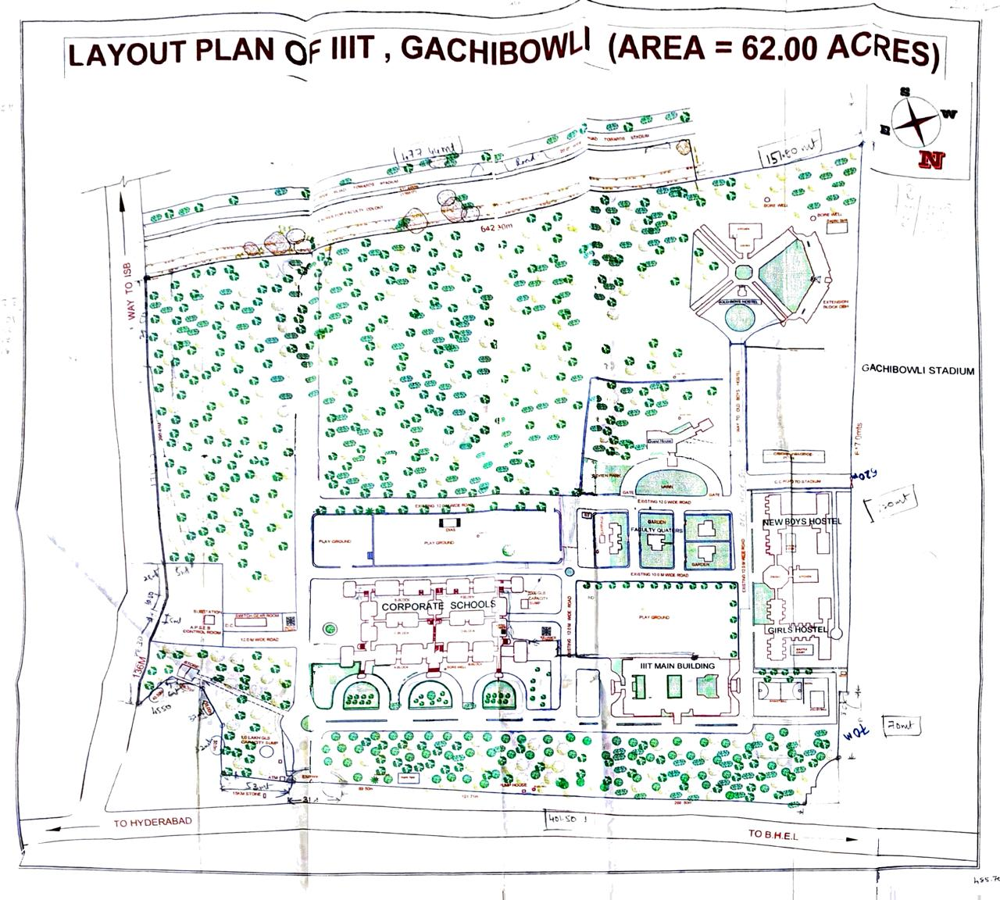
The 2002 layout plan: 62 acres.
Source: campus layout plan (2002), via SLN Shastry.